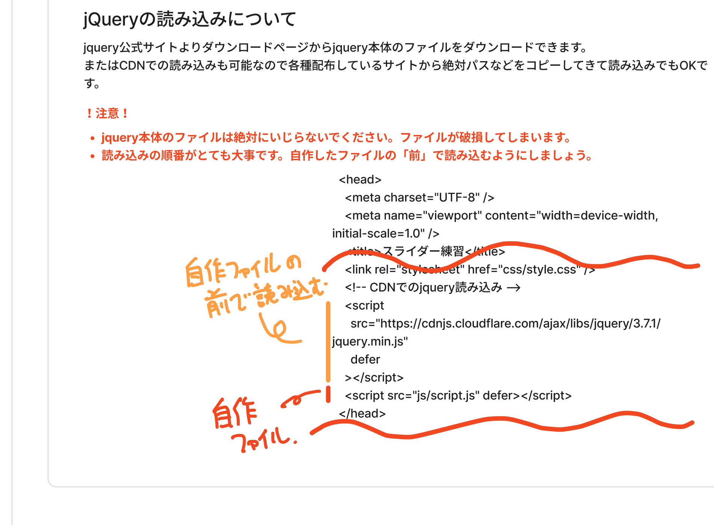
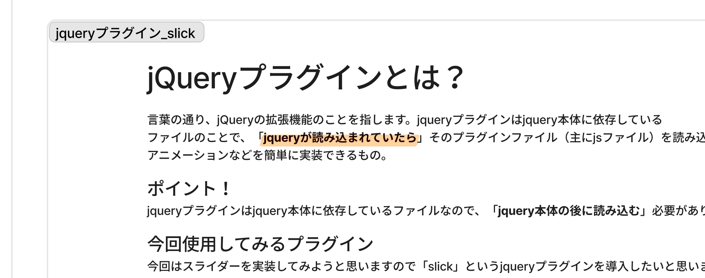
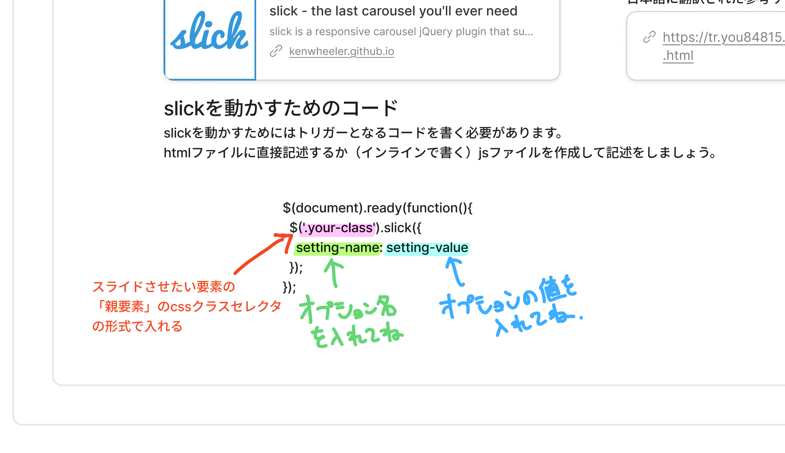

⏱タイムマップ（時間割）
区切りベース（タイムスタンプなしの文字起こしのため）。★★★＝特に重要。
⭐今日の最重要10項目
jQueryとは
JavaScript を Web向けに簡単な記述 にしてくれた約20年前のライブラリ。今でも現役、特に複雑アニメーション。
バニラJS
何も使わない 素のJavaScript。バニラ＝シンプルの業界用語。これまで学んできたJSがバニラJS。
CDN vs ローカル
jQuery読み込みは CDNでコピペ が楽。CDNはサーバー落ちリスクあり（ただしほぼない）。
安定版を使う
最新が必ずしも良いとは限らない。1つ前の安定版（今回は3.7.1） が仕事では安牌。
.min＝圧縮ファイル
インデント・改行を消した 機械向けの軽量ファイル。本番公開用。中身は手書きしない/書き換えない。
読み込み順番
jQuery（依存元） → プラグイン → 自作JSは最後。後で読み込んだものが強い。
本体は触らない
jQuery本体ファイルは絶対に 書き換えない／削らない。壊れると動かなくなる。
jQueryプラグイン
jQueryの拡張機能。jQuery読み込み後にプラグインを読み込むだけで便利機能が使える。
Slick
スライダー実装の定番プラグイン。国内サイトの半分以上はSlickで実装と言われるレベル。
Slick初期化
$('.your-class').slick({ オプション }) の3行で動く。HTML/CSS/JS の3点セットを揃えるだけ。
📚jQueryとは？（歴史と立ち位置）

- jQuery＝JavaScriptをWeb向けの簡単な記述方法にしてくれる ライブラリ（≒ファイル）
- JSは Web ページ以外にもゲームやアプリ等いろんなことができる → だから初心者には「難しい」と言われ続けた歴史
- 20年ぐらい前、超頭のいい人たちが 「Webサイト向けだけにフォーカスした記述方法」 として作ったのがjQuery
- HTML/CSSと同じくらいの学習コストでJSのような動きを実装できるようになった → サイトに動きをつける時代の覇権
- 今もハンバーガー・スライダーなどでよく使われる現役の技術
🍦バニラJSという呼び方
バニラJS＝何も使わずに JavaScript だけで書いた状態。
- 「このハンバーガーどうやって実装した？」「バニラで書いたよ」→ 何も使わずに純粋なJS
- 「jQueryに依存してるよ」→ jQuery頼り
- ※ ほかにも TypeScript など JavaScript ベースの書き方は色々あるが、皆さんが今学んでいる「素のJS」のことを業界では「バニラJS」と呼ぶ
🛠️スライダー演習：HTML/CSS/画像の準備
jQuery + Slick でフルスクリーンスライダーを作る。まずは入れ物を用意。
JavaScript/
└── jQuery/
└── slider/ // または carousel/（同義語）
├── index.html
├── css/style.css
├── js/script.js
└── images/ // 画像3枚以上（1500px以上推奨）
├── 01.jpg
├── 02.jpg
└── 03.jpg
画像の選び方
- 3枚以上（最低2枚）用意
- 1500px 以上の大きめ画像（メインビジュアル用なので）
- フリー素材サイト or AI生成（ChatGPT等）でもOK
HTML（メインビジュアル）
<div class="main-v-container"> <div class="main-v-item-area"> <div class="main-v-item"></div> <div class="main-v-item"></div> <div class="main-v-item"></div> </div> </div>
CSS で 画面いっぱい（width:100%, height:100vh など） に表示するよう調整。画像は background-image でセットすると後でうまく動く（Slickはimg直接埋め込みで挙動が変わる場合があるため）。
⬇️jQuery本体の読み込み（CDN vs ローカル）

、自作JSは下に。" style="width:100%; max-width:1100px; display:block; margin:0 auto; border:1px solid var(--border); border-radius:10px; box-shadow:0 2px 8px rgba(0,0,0,.06);">2通りの読み込み方法
① ローカルダウンロード
公式サイトの「Download」リンク → 右クリックで「リンク先を別名で保存」→ プロジェクト内に配置
<script src="js/jquery-3.7.1.min.js" defer></script>
メリット：オフラインでも動く／デメリット：ファイル管理が必要
② CDN（おすすめ）
CDNJS等のサイトから絶対パスをコピペ → HTMLに貼り付け
<script src="https://cdnjs.cloudflare.com/ajax/libs/jquery/3.7.1/jquery.min.js" defer></script>
メリット：コピペだけで楽／デメリット：サーバー落ちたら動かない（ほぼないけど）
1個下の安定版（今回は
3.7.1）を選ぶのが仕事的にも安牌。チーム配属後は先輩・上司の指示に従えばOK。
📦.min ファイル＝圧縮ファイルとは
jQuery を取りに行くと jquery.min.js や jquery.js など複数のファイルがあって戸惑う。.min の意味を理解しておく。
style.css（人間向け・読みやすい）
.btn { padding: 10px 20px; color: #fff; background: #1a3a5c; }
style.min.css（機械向け・軽い）
.btn{padding:10px 20px;color:#fff;background:#1a3a5c}
- インデント・改行・スペースは 人間の読みやすさ用。コンピュータには不要
- 無駄を削るとファイルサイズが小さくなり、ページ読み込みが速くなる
- 仕事によっては 納品時にmin化したファイルをサーバーにアップ する文化もある
jquery.min.js← 圧縮版・全機能入り・本番用。これを使えばOKjquery.js← 非圧縮版（中身を読みたい時用）jquery.slim.min.js← Ajax等を省いた軽量版。初心者は触らない（何が削られているか分からないと危険）.mapファイル← デバッグ用、無視してOK
⚠️読み込み順番が超大事
<!-- ✅ 正しい順序 --> <script src="jquery.min.js"></script> <!-- 1. 依存元 --> <script src="slick.min.js"></script> <!-- 2. プラグイン（jQuery依存） --> <script src="js/script.js" defer></script> <!-- 3. 自作（両方を使う） -->
- コードは 上から下に読み込まれる（常識）
- 自作JSの中で jQuery の書き方を使うなら、自作JSが読まれる前に jQuery が準備完了している必要がある
- 順番が逆だと 「jQuery が見つからない」エラー になる
自作JSは「自分が書いたことを最終的に反映させたい」から、必ず最後に読み込む。
❓受講者Bさんの質問：Googleフォントの読み込み順も同じ？
<link>で読み込むときも、同じ感覚（自作CSSより前で読む）でいいですか？」
<!-- ✅ 正しい順序 --> <link rel="stylesheet" href="https://fonts.googleapis.com/..."> <!-- 1. 外部 --> <link rel="stylesheet" href="css/reset.css"> <!-- 2. リセット --> <link rel="stylesheet" href="css/style.css"> <!-- 3. 自作CSS -->Googleフォントを 自作CSSの後 に読むと、(a) フォント指定時に「ない」エラー＋ (b) Googleフォント側のCSSで自作スタイルが上書きされる謎の事故、二重リスクが発生。
覚え方の一言：「自作ファイルは下で読み込め」（A先生）
🧩jQueryプラグインとは？

- VS Code に Live Server プラグインを入れると Live Server 機能が増えるのと同じ感覚
- jQuery本体＋プラグインファイル＝アニメーションが簡単に実装できる
- 世の中にたくさん公開されているプラグインファイル（主にJSファイル）を活用
⭐Slick の紹介（業界の定番）
- スライダー / カルーセル実装の 超有名 jQuery プラグイン
- A先生いわく 「日本の国内サイトのスライダー、半分以上はSlickで実装されてる」 レベル
- 公式：
kenwheeler.github.io/slick/ - 各種デモあり：通常スライド／フェード／レスポンシブ／中央寄せ／無限ループ など
📥Slick の読み込み（CSS×2 + JS）
Slickの公式 README に記載の通り、以下を <head> 内で読み込む（CDNでOK）。
<!-- 1. Slick の CSS（基本スタイル） --> <link rel="stylesheet" href="https://cdn.../slick.css"/> <!-- 2. Slick のテーマ CSS（矢印・ドット等の装飾） --> <link rel="stylesheet" href="https://cdn.../slick-theme.css"/> <!-- 3. jQuery本体（v1.11以上） --> <script src="https://cdnjs.../jquery/3.7.1/jquery.min.js"></script> <!-- 4. Slick本体（jQueryの後！） --> <script src="https://cdn.../slick.min.js"></script> <!-- 5. 自作JS（最後！） --> <script src="js/script.js" defer></script>
- 親要素に ユニークなクラス名（your-class） を付ける
- 子要素を入れる（divでも、imgでも、孫要素入りでも何でもOK）
- この子要素が1枚ずつスライドされる
<div class="your-class main-v-item-area"> <div class="main-v-item"></div> <div class="main-v-item"></div> <div class="main-v-item"></div> </div>
🚀Slick の初期化コード＆オプション

.slick()→オプションのオブジェクト
$(document).ready(function() { $('.your-class').slick({ 'setting-name': 'setting-value', // ...オプションを並べる }); });・
$('.your-class') ＝ スライドさせたい親要素 の CSSクラスセレクタ・
.slick({...}) でオプションを渡す
今日使った主要オプション
| オプション | 値 | 意味 |
|---|---|---|
arrows | false | 左右の矢印を非表示 |
autoplay | true | 自動再生する（初期値は false） |
autoplaySpeed | 3000 | 1枚あたりの表示時間（ミリ秒・3000＝3秒） |
speed | 1500 | 切り替わるアニメーションの速度（1500＝1.5秒） |
fade | true | 横スライドではなくフェードイン/アウトで切り替え |
pauseOnHover | false | マウスを乗せても止めない（フルスクリーン時の必須対策） |
pauseOnFocus | false | フォーカスが当たっても止めない |
pauseOnDotsHover | false | ドットにホバーしても止めない |
画面いっぱいのメインビジュアルだと カーソルが常に乗っている状態 になり、自動再生してくれない。
→
pauseOnHover / pauseOnFocus / pauseOnDotsHover を全部 false に。ワンセットで覚えてコピペでOKレベル。
完成形（記述例）
$(document).ready(function() { $('.main-v-item-area').slick({ arrows: false, autoplay: true, autoplaySpeed: 3000, speed: 1500, fade: true, pauseOnHover: false, pauseOnFocus: false, pauseOnDotsHover: false }); });
🎨Slickのカスタマイズ＆復習タイム
Slick導入後、自動で .slick-slide・.slick-track・.slick-dots などのクラスが付与される。これらを利用してさらに細かいスタイルを書ける。
- デベロッパーツール（要素の検証）で付与されたクラス名を確認
- そのクラス名を
style.css側で上書き（より具体的なセレクタで） - ドット・矢印・トラック幅などを自由に変更
- Slickのオプションを自分で触ってカスタマイズ（速度・フェード・ドット表示など）
- これまでの自分のプロジェクト（ポートフォリオ等）に Slickでスライダーを導入してみる
- 復習で JavaScript全般を確認（querySelectorAll、配列、for文、forEach 等）
📚用語集
| 用語 | 意味 |
|---|---|
| jQuery | JSをWeb向けに簡単な記述にしてくれるライブラリ（約20年前誕生） |
| ライブラリ | 機能をまとめた外部ファイル（≒「ファイル」と捉えてOK） |
| バニラJS | 何も使わずに書いた素のJavaScript。バニラ＝シンプルの業界用語 |
| CDN | Content Delivery Network。ファイルを外部サーバーから配信する仕組み。コピペで読み込める |
| CDNJS / jsDelivr / Google等 | CDN配布サービス。同じファイルを別サーバーで配ってるだけ、好きなところを使えばOK |
| .min（圧縮ファイル） | インデント・改行を消した軽量版ファイル。本番公開用 |
| .map ファイル | 圧縮版コードのデバッグ用情報。気にしなくてOK |
| slim 版 | jQueryの必要最低限版。初心者は触らない（何が削られているか不明だと危険） |
| 安定版（stable） | 最新の一つ前のバージョン。仕事では安牌 |
| ベータ版 | 最新で実験的なバージョン。何が起きるか分からない |
| jQueryプラグイン | jQueryに依存して動く拡張機能ファイル |
| Slick | スライダー/カルーセル実装のド定番 jQuery プラグイン |
| カルーセル | スライダーの同義語。画像や要素を順番に切り替える表示 |
| $（ドル） | jQuery関数の別名。$('.class')＝jQuery('.class') |
| $(document).ready() | HTMLが読み込まれてからJSを実行するjQueryの書き方 |
| 依存関係 | あるファイルが別のファイルを必要としている関係。順番が大事 |
✅宿題・復習チェック
- スライダー演習を最後まで通す（HTML/CSS + jQuery CDN + Slick + 起動JS）
- 読み込み順は jQuery → Slick → 自作JS の順を必ず守る（自作は最後！）
- Slickのオプションを 自分で触って遊ぶ：速度を変える／fade を切る／矢印・ドットを出す
- 📝 応用課題：自分のポートフォリオに Slick でスライダーを1つ追加してみる（メインビジュアル、ギャラリー、お客様の声カードなど）
- 明日以降：JS は一旦お休み、レスポンシブWebデザインの制作時間に突入。A先生・B先生に見守られながら自分のプロジェクトを進める
- 余裕がある人：Slick の付与クラス（.slick-slide 等）を style.css から上書きしてカスタマイズ
- 覚えておく：
.min＝圧縮ファイル、.map＝無視OK、.slim＝触らない
💬先生のことば
jQueryというものはずっと覇権を得るというか、サイトを作るんだったら絶対導入してこいつを使って記述しよう、という時代がずっと続いていたんですね。── jQueryの歴史
JQuery本体は絶対自分で書き換えないこと。何書いてあるかわかんないですよね。これでも完成品なんで、勝手に手を加えない、勝手に消さない。── 本体は触らない
最新バージョンは「ベータ」って書いてあるんで、何が起きるか分かんないよ、みたいな意味合いなわけですよ。なので1個下ぐらいで読み込むのが、一応仕事とかの面では安牌かなと思いますね。── 安定版を選ぶ
自作ファイルをとにかく下で読み込め、あとで読み込めっていうことだけでも覚えておけば、とりあえず大丈夫かなという感じもありますね。── 読み込み順の覚え方
スライダーを使うならスリック、ってもうみんなすり込まれてるレベル。── Slickの圧倒的シェア
これは今回はそんなに長いコードとかを書かないし、あんまりやんないんですけど、一応仕事的に言うと、その会社さんによっては納品するファイルを全部圧縮してから納品するっていうことがあったりします。── 現場の.min文化